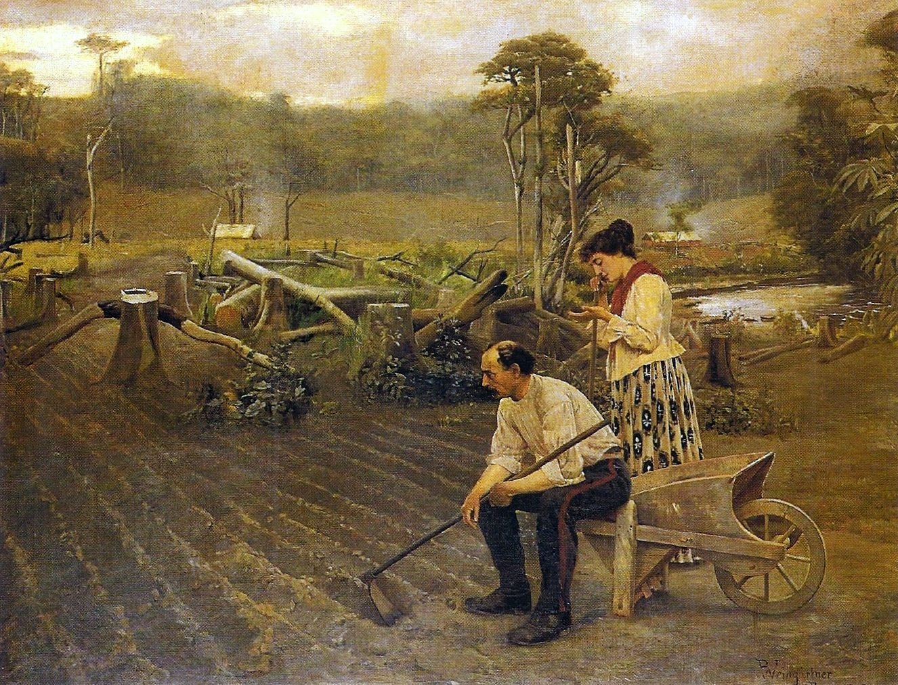
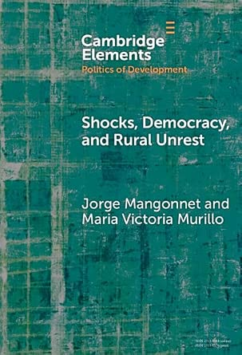

Book Project
Law of the Landless: The Origins of Property Rights in Post-Emancipation Americas
- Book Conference
- Summer 2026 (Vanderbilt University)
- Participants
- Catherine Boone (LSE), Thad Dunning (UC Berkeley), Alisha Holland (Harvard), James Mahoney (Northwestern)

Summary. Why and how do private property rights over critical resources such as rural land emerge? Existing theories point to growing scarcity or to liberal revolutions ''from above.'' Yet, in the plantation economies of the Americas, individual and exclusive rights were adopted where land was abundant and commercially worthless, and where liberal revolts had failed. Law of the Landless (preliminary title) argues that private property rights were a political response to emancipation — in particular, a global campaign to abolish the Atlantic slave trade. Facing imminent labor shortages, planters enacted highly restrictive property laws to keep a free agricultural workforce off the land it needed to subsist, depress rural wages, and block the rise of a smallholder class. This strategy was feasible, however, only under two conditions: when (i) switching to an alternative system of forced labor, such as indentured Asian workers, was too costly because of geographic, economic, and institutional barriers; and when (ii) planters had preserved the de jure means of political influence of the colonial period in the post-independence era, allowing them to shape land policy in their favor. Where both conditions held, planters not only enacted selective and inefficient property rights but voluntarily demarcated and registered their estates, co-producing the state's capacity to enforce them. Drawing on archival evidence from Imperial Brazil (1822–1889) and shadow cases from Cuba and Colombia, the book shows that explanations based on export booms or radical liberal reform cannot account for the timing and design of property law in the post-emancipation Americas — and that property rights created to extract cheap labor left a long shadow of slow growth, inequality, and rural conflict.
Cambridge Element
Shocks, Democracy, and Rural Unrest

Existing perspectives suggest that waves of rural unrest arise as responses to economic and environmental shocks. We propose an integrated framework, grounded in the literature on interest group politics and state-society relations, to explain the dynamics of rural protests by commercial farmers and peasants in democracies during periods of disruptive and rapid change. Focusing empirically on South America during the 2000s agricultural boom, we argue that contentious collective action under democratic rule during shocks is a costly political strategy shaped by access to connections in formal policymaking arenas and the cohesiveness of organizations representing farmer and peasant interests. To substantiate our argument, we conduct within- and cross-case comparisons of Argentina and Paraguay, employing a mix of primary and secondary evidence, and incorporating shadow cases from Brazil and Bolivia.